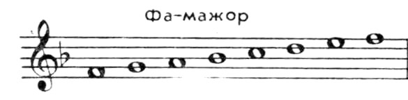
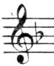
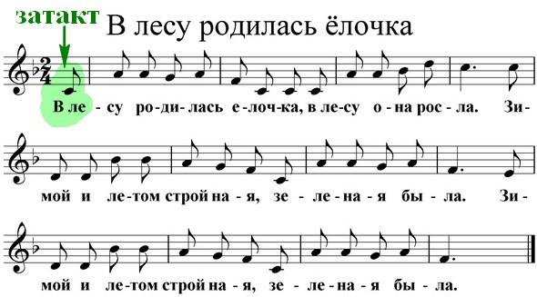

Урок 18. Тональность Фа-мажор. Затакт.
Теория
Фа-мажор — это мажорная тональность, в которой главная нота (тоника) — Фа.
- В гамме Фа-мажор используются ноты: Фа, Соль, Ля, Си♭, До, Ре, Ми, Фа.
- Отличительная особенность этой тональности — наличие одного бемоля (Си♭), который пишется на нотном стане после ключа.
- Затакт — это неполный такт в начале произведения, который содержит меньше долей, чем остальные такты. Затакт помогает начать мелодию с нужной доли и часто встречается в песнях и маршах.
В начале нотной строки после скрипичного ключа ставится бемоль на линии Си — это знак тональности Фа-мажор.
Затакт обычно дополняется последним тактом произведения, чтобы в сумме получилось полное количество долей.
Знание особенностей тональности и затакта помогает правильно исполнять и читать музыку.
Упражнения
- Распознавание тональности: Определите, какая тональность изображена или звучит (В начале строки стоит один бемоль — это Фа-мажор; В гамме Фа-мажор есть нота Си♭; Тоника гаммы — Фа).
- Распознавание затакта: Определите, есть ли затакт в музыкальном примере (Мелодия начинается не с первой доли — это затакт; В первом такте меньше долей, чем в остальных; Последний такт дополняет затакт до полного такта).
- Пение: Пропойте гамму Фа-мажор вверх и вниз (Фа, Соль, Ля, Си♭, До, Ре, Ми, Фа).
Аудио-примеры
Гамма Фа-мажор вверх и вниз:
Пример мелодии с затактом (В лесу родилась ёлочка):
Визуальные примеры
Гамма Фа-мажор на нотном стане:

Знак бемоль (Си♭) после ключа:

Пример затакта в нотной записи:
